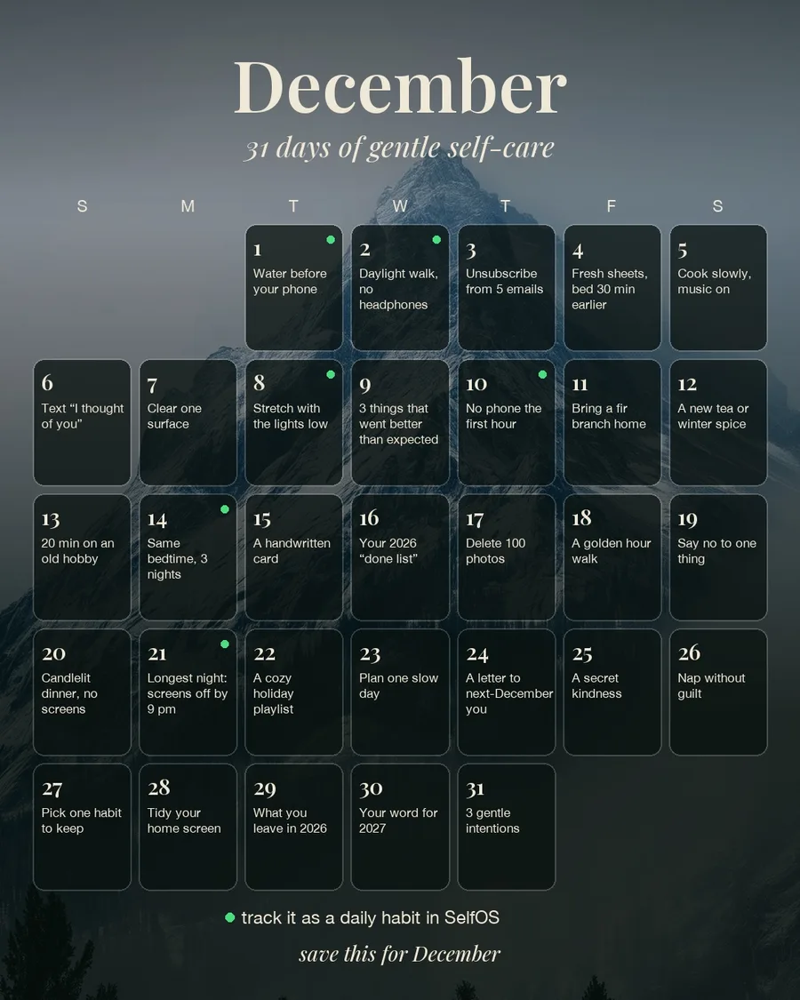

Free printable · December 2026
December Self-Care Calendar
One small thing for yourself every day of December. No bubble baths on repeat — just 31 ideas that make winter feel softer. Days with a green dot are habits worth keeping: you can track them in SelfOS.

A light, ink-friendly version to print (US Letter landscape, PDF).
Download the calendarWeek 1 · December 1–6
- 1Water before your phone
- 2Daylight walk, no headphones
- 3Unsubscribe from 5 emails
- 4Fresh sheets, bed 30 min earlier
- 5Cook slowly, music on
- 6Text “I thought of you”
Week 2 · December 7–13
- 7Clear one surface
- 8Stretch with the lights low
- 93 things that went better than expected
- 10No phone the first hour
- 11Bring a fir branch home
- 12A new tea or winter spice
- 1320 min on an old hobby
Week 3 · December 14–20
- 14Same bedtime, 3 nights
- 15A handwritten card
- 16Your 2026 “done list”
- 17Delete 100 photos
- 18A golden hour walk
- 19Say no to one thing
- 20Candlelit dinner, no screens
Week 4 · December 21–27
- 21Longest night: screens off by 9 pm
- 22A cozy holiday playlist
- 23Plan one slow day
- 24A letter to next-December you
- 25A secret kindness
- 26Nap without guilt
- 27Pick one habit to keep
Week 5 · December 28–31
- 28Tidy your home screen
- 29What you leave in 2026
- 30Your word for 2027
- 313 gentle intentions
A new calendar every month — save this page for January.
Keep the good ones as habits
Liked a December idea enough to keep it? In SelfOS it becomes a habit you tick from your home screen, and a little bonsai grows with every day you show up. Free on iPhone and Android.
FAQ
Do I have to do one every day?
No. Skip a day, swap two ideas, or do the whole week on Sunday. It's a list of small kindnesses, not homework.
What do the green dots mean?
Those six ideas make good everyday habits. If one sticks, keep it going in a habit tracker after December ends.